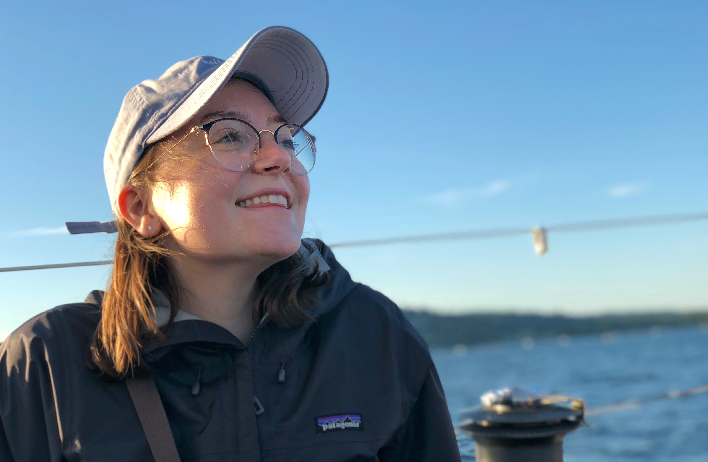

General Chair

Jon E. Froehlich, University of Washington, USA
generalchair-assets22@acm.org
Web and Graphics Design Chairs
Liang He, University of Washington, USA
web-assets22@acm.org

Junhan (Judy) Kong, University of Washington, USA
web-assets22@acm.org

Jaylin Herskovitz, University of Michigan, USA
web-assets22@acm.org